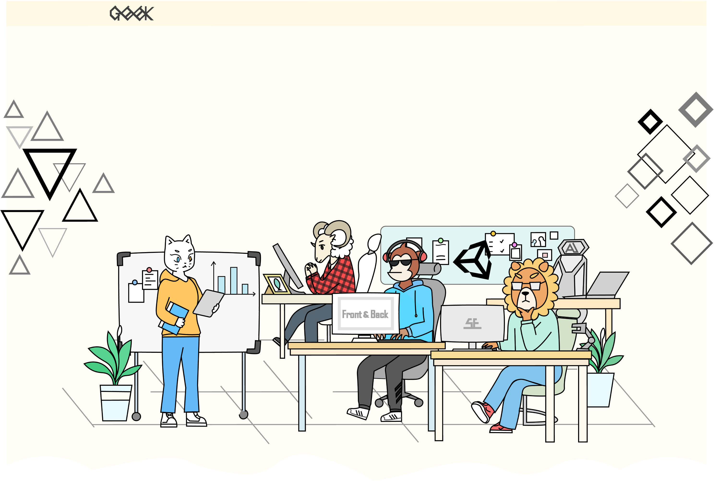
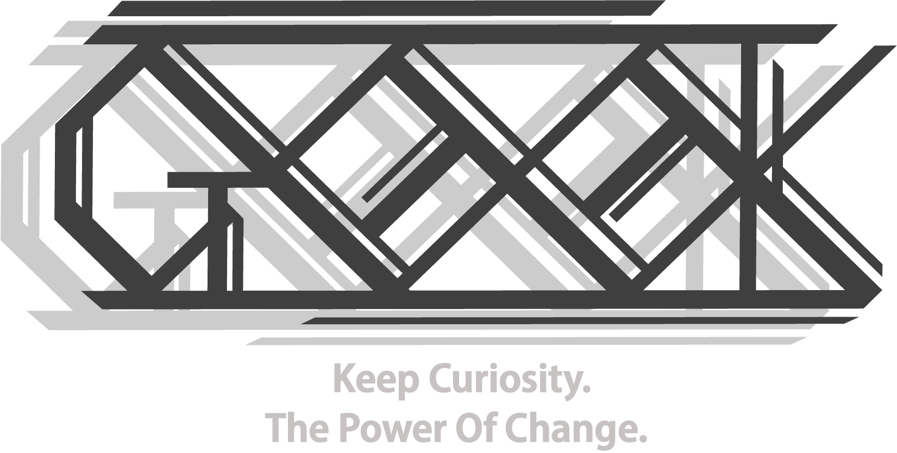
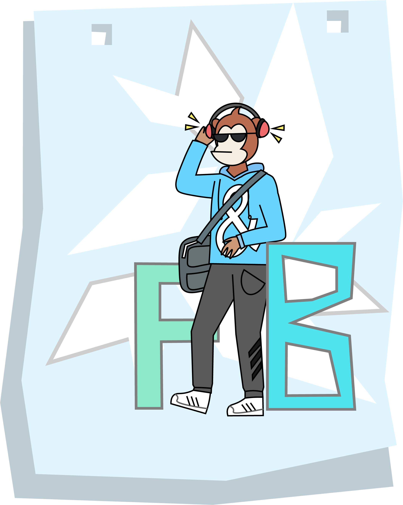
“Stay Hungry，Stay Foolish”
前端：前端开发是创建Web或app视觉界面呈现给用户的过程通过HTML，CSS及JavaScript以及衍生出来的各种技术、框架、解决方案，实现互联网产品的用户界面交互。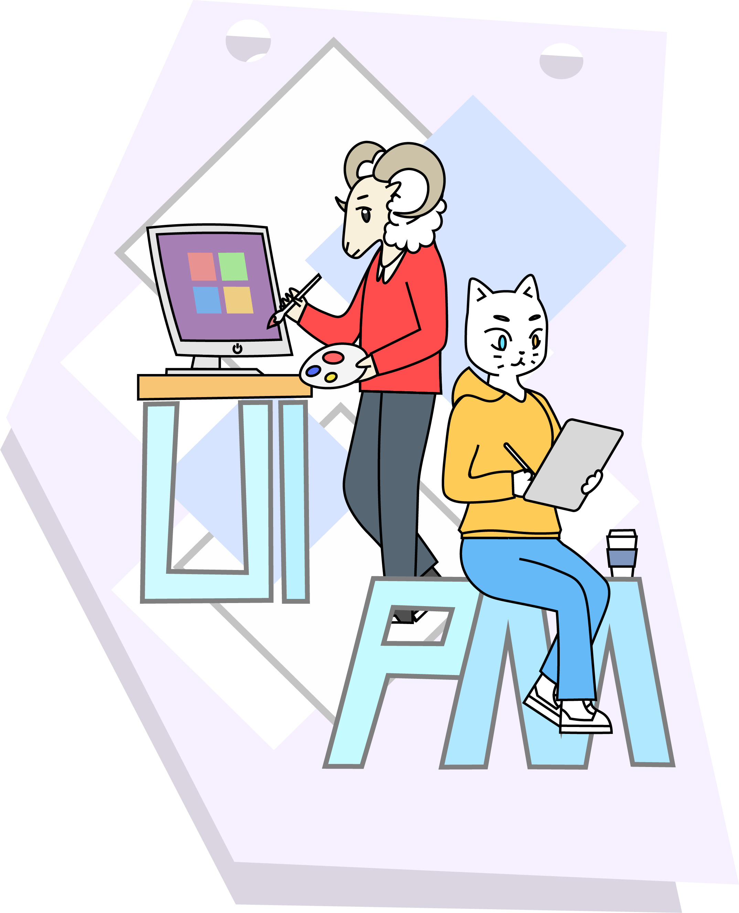
"好的软件的特征是,明明没用过，但总觉得用过似的。"
PM是针对某一项或是某一类的产品进行规划和管理的人员。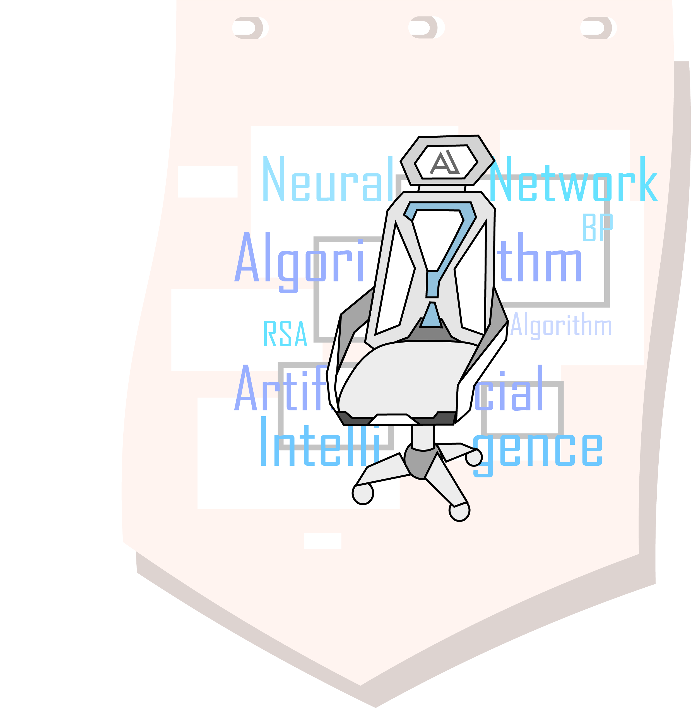
"路漫漫其修远兮，非大毅力者不能"
人工智能站在了风口，机器学习和深度学习是它的分支，是团队仍在探索的方向。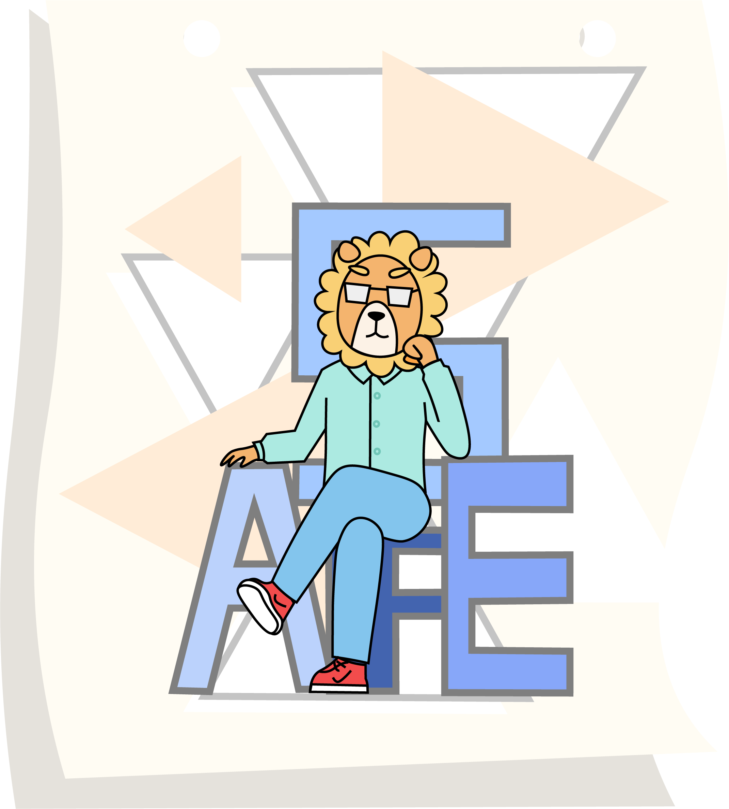
"我们需要的不是脚本小子，而是对底层原理了如指掌。"
主要涉及网络攻防、漏洞挖掘，能够代表团队参加CTF安全赛事。 互联网安全从其本质上来讲其实就是互联网上的信息安全。 网络安全攻城狮是拥有扎实基础的SuperHacker,同时具有强大的自学能力。 网络安全攻城狮能够识别IT系统的优缺点。并且了解黑客以及网络犯罪手段,且精通网络安全技术:包括服务漏洞扫描、程序漏洞分析检测、病毒木马防范等。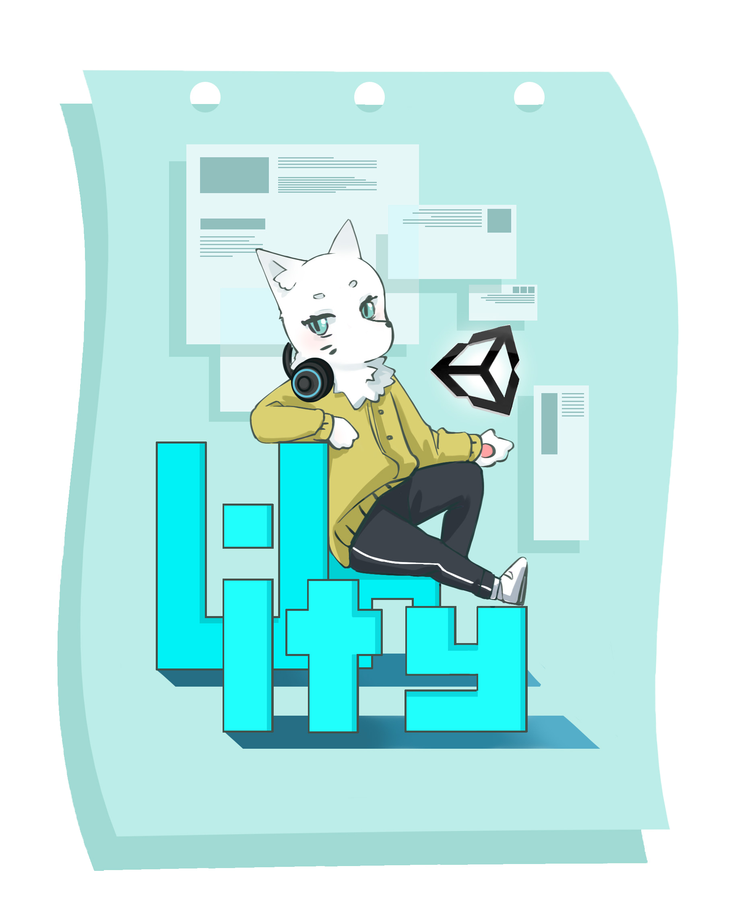
"TECH OTAKUS SAVE THE WORLD"
对游戏开发的热爱和追求，使我们相聚于此。 涉及计算机图形学的学习，我们使用物理模拟引擎Unity开发我们所追求的世界，一个故事，一个角色，在我们的世界里改变现实，创造新的可能，我们参与，我们改变，我们创造...About Us
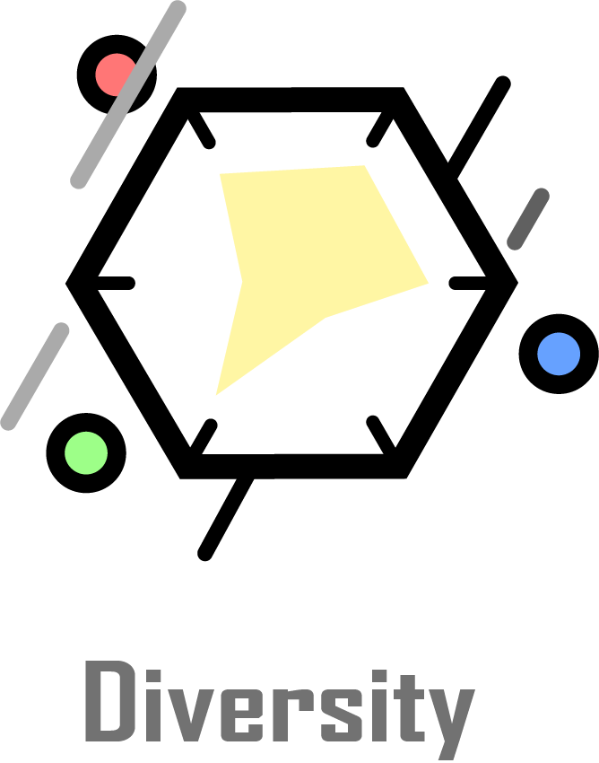
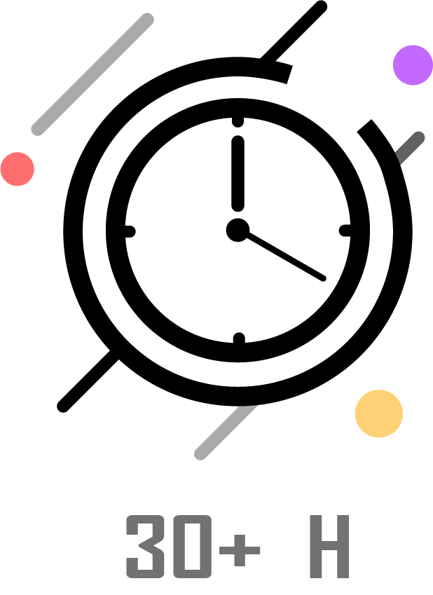
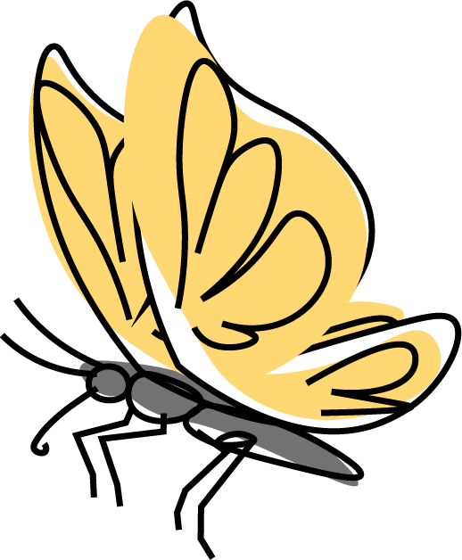
多元化是我们的特色。
在这里，你可以拥有多种方
向选择，前后端、安全、AI、
产品/设计、游戏等。
每周我们会举行一次技
术例会，用来汇报我们的学
习内容，供成员之间交流学习。
素材没有
speech我用蝴蝶替了^^
耐心、毅力是我们必
备的品质，每周我们会
至少花30小时在实验室中。
以保证技术的精进。
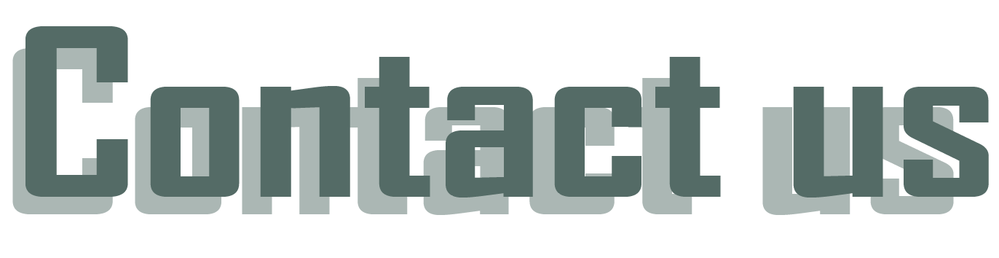
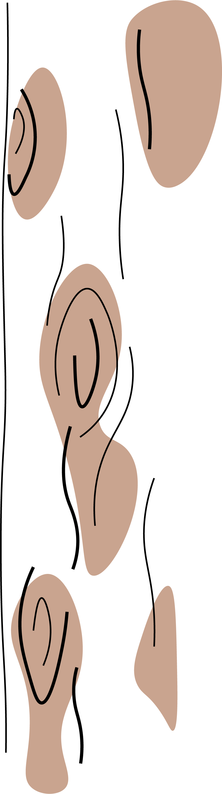
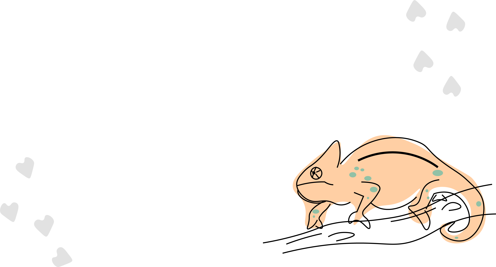
•热爱计算机，具有geek精神，喜欢DIY，动手能力较强
•有编程/算法/硬件基础为佳(有作品可附上)
•有足够的空余时间，热爱思考，对事物有自己的见解
ps:非新思路统招只有通过发送邮件自我介绍后，收到
邮件回执后才会被允许进群,在读
学生,都可邮件到newthread_geek@outlook.com
报名加入.(信中需备注个人基本信息
以及意向方向,此招新活动为长期招新)
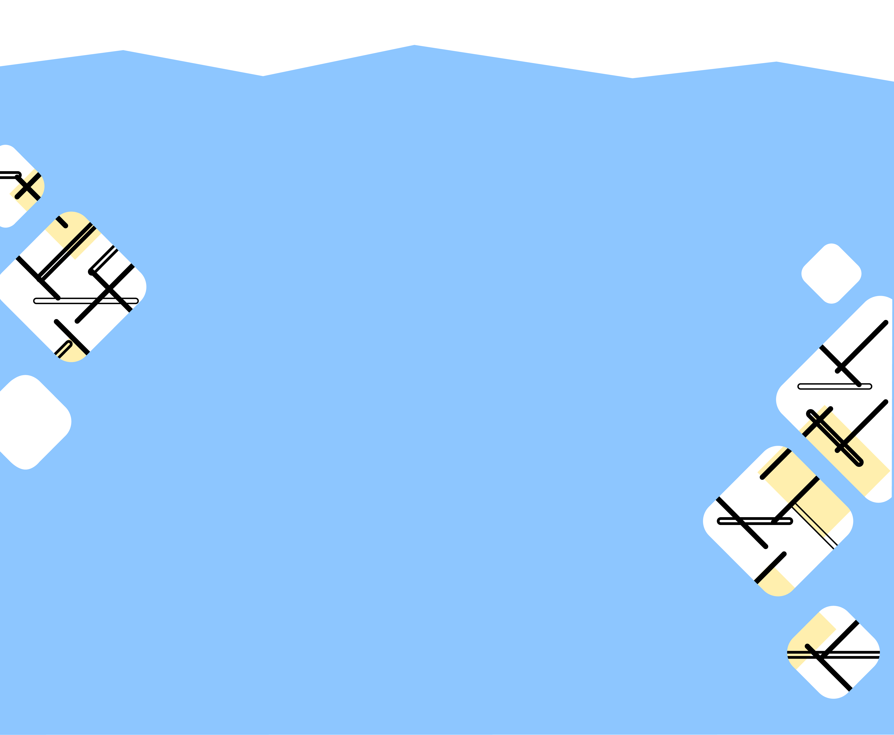
拥有好奇之心，改变之力，爱钻研，能折腾。
按照惯例，正式招新时间是在9月下旬~10月上旬，不过今年会有一些改动，笔试地点一般在9号教学楼。 如果想要了解我们，可以加入我们的QQ群，招新具体的安排/变动会在招新群通知。
嗯...我们一共有一轮笔试和两轮面试。权衡技术、经验和学习能力，第一轮是一些视野性的题目，淘汰率并不高。第二轮单独面试，根据你的笔试提出技术相关的问题、兴趣爱好、个人看法。最后一轮群面，首先问及时间分配上的问题，其次也会向你提出各种奇怪的问题。这一轮中许多题目其实并不难，也无标准答案，重在考察同学们在压力下的逻辑思维。全部通过成为预备成员啦。
在考核期间每人会拥有一位'长者'带你入门，学习技术与知识，交流经验与想法。完成每周的新人任务后再进行一次考核筛选后就可以成为Geek组正式成员啦！在考核期必须满足每周30个小时在实验室哦,所以考核期也不可以懈怠哦！
1对1的新人指引，每一个成员都有会一个mentor, 带你初入门槛，与你一同成长，组内管理较宽松,在尊重其他人的前提下可以尽情发挥自己的个性。打破平淡，与同样疯狂的人把疯狂的idea实现，磨砺耐性、培养思维、成就梦想。Lab设备/网络资源充足，闲暇之余也有组织活动。更有许多的故事等你来听~
你要知道大学是一个可以自由安排自己学习生活的地方。如果你想在上课之余充实自己、激励自己，最好的方法就是和比自己更优秀的人在一起。团队不缺优秀的人，而我们也期待同样优秀的你，让我们一起前进！小组里也有不少保研, 考研的前辈们, 大部分都能找到一个平衡点, 而且团队的经历对你日后读研, 工作都大有裨益。
我们希望你有很强的自学能力，同时关注新事物、新技术，喜欢挑战，逻辑性强，善于和各种文化的人合作.“每个人都可以做自己想做的事情，每个人的方向不一样。如果你想做产品或有不错的 idea，那么就可以找志同道合的人一起合作。”